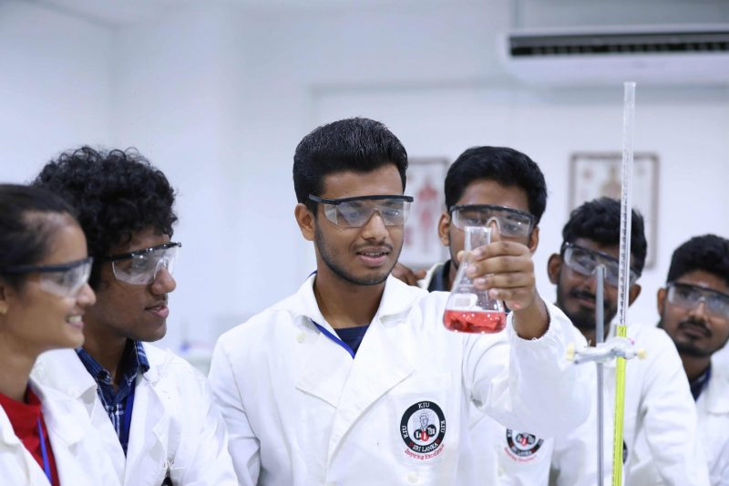

Our Faculties
.jpg)
Faculty of Graduate studies

Faculty of Health Sciences
Faculty of Nursing

KIU is a Higher Education Institute established under the companies act of Sri Lanka and is fully owned by KISMET Highly Advanced Technology Training Center (PVT) Limited.
KIU was established in the year 2010.The registered office is situated at 253/1, Malabe Road, Battaramulla, Sri Lanka.
Your gateway to quality higher education starts here;it's just a click away! joing in the journey towards achieving your goals and making your dreams come true.
An undergraduate degree serves as a foundation for further academic pursuits, such as graduate studies, or as a pathway to enter the workforce in various professions. It equips students with the necessary knowledge and skills to pursue advanced education or begin their careers in their chosen fields.
Postgraduate degrees are typically offered by universities and other higher education institutions and come in various forms, including master's degrees, doctoral degrees (Ph.D.), and professional degrees like MBAs or JDs.
Short courses offer a cost-effective and time-efficient way to acquire new skills or knowledge, making them popular among working professionals, career changers, and lifelong learners seeking continuous education and professional development.